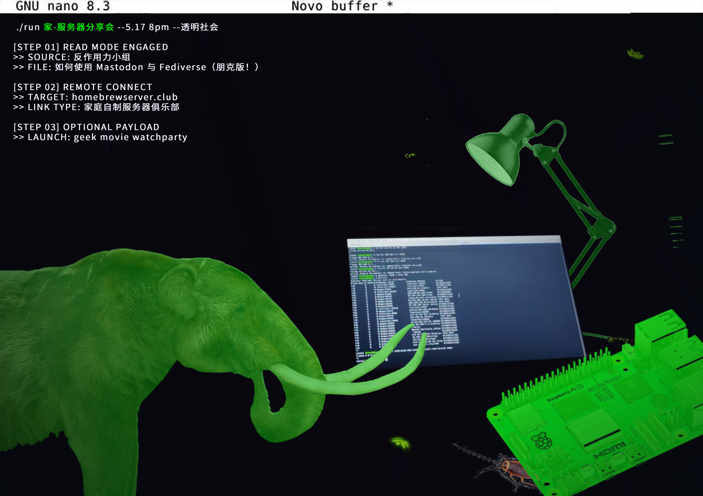

本次分享会是前一次服务器工作坊的延伸和转化（因为自托管涉及中国的互联网审查）。活动讨论了科技公司如何夺走数字生活中柔软和私密的部分，以及一些在线社区如何利用家庭托管和去中心化方法从社交媒体手中夺回个人信息的控制权。活动包括阅读THE COUNTERFORCE的手册，以及与荷兰家庭托管服务器俱乐部hombrewserver.club的连线。 This sharing session was an extension and transformation of the previous server workshop (because self-hosting involves internet censorship in China). The event discussed how technology companies have taken away the soft and private aspects of digital life, and how some online communities are using home-hosting and decentralized methods to reclaim control of personal information from social media. The event included readings from THE COUNTERFORCE's manual and a connection with the hombrewserver.club, a home-hosted server club in the Netherlands.